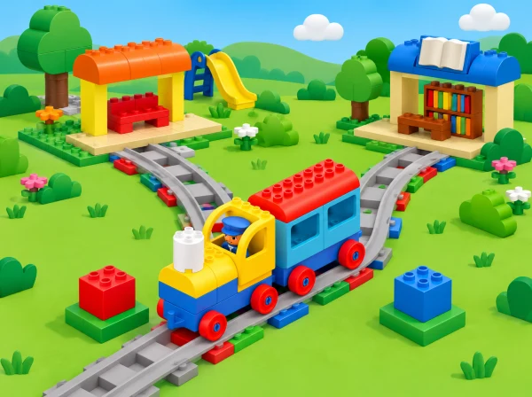
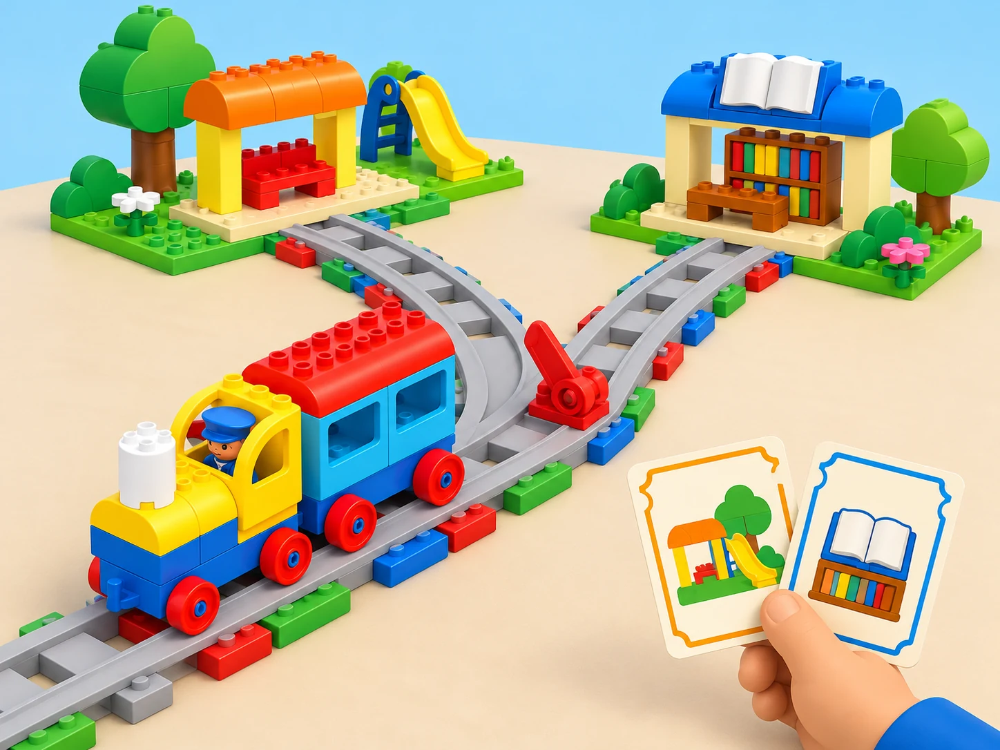

Dues rutes, una decisió
🏷️ Ciutat intel·ligent i accessibilitat
🌱 Situació, repte i intenció
nek
La condició «si el bitllet té el símbol del parc, aleshores triem la branca del parc» és primer una regla compartida entre persones. La persona conductora interpreta el bitllet i mou manualment la palanca roja; ni el bitllet ni el color activen l’agulla de manera automàtica. Així separem el concepte d’una decisió condicional de l’acció mecànica real del tren.
🎯 Aprenentatges i vocabulari
- Reconéixer que la via en Y ofereix més d’un camí possible.
- Relacionar una informació —bitllet/color/símbol— amb una opció de ruta.
- Expressar una regla condicional simple en forma «si… aleshores…».
- Accionar l’agulla roja de manera segura i comprovar l’estació on arriba el tren.
- Comparar maneres de comunicar una destinació i dissenyar una solució més clara.
Vocabulari: bitllet, conductora, senyal, indicar, canvi d’agulla, opció, si… aleshores…. Acompanyeu cada paraula amb un objecte o pictograma; no cal que l’alumnat domine la terminologia formal per mostrar la idea.
🧰 Materials i preparació
Comproveu que el kit inclou la via en Y, l’agulla roja, maons d’acció i passatgers. Prepareu almenys tres llocs de parada coneguts pel grup (estació, parc i biblioteca), un maó de color per a cada parada i bitllets que coincidisquen amb eixos colors. Afegiu una icona a cada color per no dependre només de la percepció cromàtica. L’agulla ha de moure’s amb suavitat; no la forceu si el tren està en marxa.
Un set està pensat per a grups de fins a sis. Repartiu rols i canvieu-los entre intents: conductora, passatgera, observadora de l’agulla, observadora de la parada, narradora i encarregada de les targetes. Si no hi ha una via Y compatible, feu la primera ronda amb un mapa de dues branques i una fitxa mòbil; marqueu-la com a simulació i conserveu el repte condicional.
📅 Seqüència didàctica
Joc de bitllets de colors i símbols
Fase 1 · Activem i prediem
Trieu tres punts de l’aula com a estacions i poseu a cada lloc un maó de color amb un pictograma: parc, biblioteca o jardí. Pregunteu quin bitllet podria enviar una passatgera a cadascun dels llocs abans d’explicar la regla.
Fase 2 · Explorem i construïm
Una persona fa de conductora i reparteix un bitllet a cada passatgera. La regla es diu en veu alta o s’assenyala amb una targeta: «si tens el bitllet amb l’arbre, aleshores vas cap al jardí». La persona camina o mou una fitxa fins al punt corresponent.
Fase 3 · Expliquem i registrem
En arribar, compareu la icona del bitllet amb la de l’estació. Registreu parelles bitllet–destinació i formuleu la regla amb «si… aleshores…», oralment, amb pictogrames o amb una tira de fletxes.
Fase 4 · Apliquem i millorem
Canvieu colors, símbols o destinacions i comproveu que la regla continua sent clara. Si un bitllet pot correspondre a més d’una estació, decidiu què cal modificar: la llegenda, el símbol o la instrucció. Com a suport, treballeu amb dues estacions i un sol pictograma.
Fase 5 · Comprovem i reflexionem
Acabeu posant dos bitllets al costat de dues branques dibuixades i fent una predicció de camí.
Construïm la Y i fem la tria manual
Fase 1 · Activem i prediem
Abans de muntar, mostreu el mapa de dues branques i pregunteu quina informació necessita la conductora per triar-ne una. Recordeu que la regla orienta una persona: el tren no llig el bitllet.
Fase 2 · Explorem i construïm
Munteu la via en Y, col·loqueu una destinació en cada branca i situeu maons d’acció perquè el tren puga aturar-se, d’acord amb les funcions que el grup ja ha comprovat. La conductora rep un bitllet, verbalitza o assenyala la regla i mou l’agulla roja abans d’engegar el tren.

Fase 3 · Expliquem i registrem
Una altra persona posa una figura passatgera al tren; la resta observa per separat el moviment de l’agulla i el punt on el tren s’atura. Registreu símbol del bitllet, branca triada, posició de l’agulla, estació observada i si coincideix amb la predicció.
Fase 4 · Apliquem i millorem
Feu un intent per a cada bitllet i canvieu els rols. Si el resultat no coincideix, reviseu l’agulla, la connexió de la via i la posició del maó d’acció; no atribuïu el resultat al bitllet perquè el tren no el llig. Feu els canvis amb el tren aturat o amb la via buida, segons les instruccions del set; ningú posa la mà davant del tren.
Fase 5 · Comprovem i reflexionem
Triem senyals i ampliem les opcions
Fase 1 · Activem i prediem
Recupereu la llegenda de les sessions anteriors. Pregunteu quin senyal —color, pictograma, paraula, llum o so— faria més clara la destinació per a les persones del grup.
Fase 2 · Explorem i construïm
LEGO proposa parlar dels senyals que els trens poden donar; en aquesta maqueta, el grup prova una llegenda que ajude les persones a saber quina ruta s’ha triat. No pressuposeu que el tren reconeix bitllets, paraules o sons: són codis per a qui controla el model.
Fase 3 · Expliquem i registrem
Dibuixeu la regla per a cada destinació i comproveu que una altra parella pot interpretar-la sense explicacions addicionals. Marqueu qualsevol senyal ambigu i proposeu una llegenda més clara.
Fase 4 · Apliquem i millorem
Si la dotació ho permet, connecteu dues vies Y per crear tres branques o una forma de Q. Dibuixeu quina regla caldria per a una tercera destinació i com s’hi tornaria en una visita posterior. Proveu un maó verd de retorn només si és a la caixa i la seua funció està verificada en el tren real; altrament, traceu el retorn amb una fitxa sobre el mapa.
Fase 5 · Comprovem i reflexionem
🧪 Evidències i avaluació
Guardeu les targetes i la llegenda, l’esquema de la via, les prediccions, el registre de proves i la versió millorada dels senyals. Observeu si l’infant:
- descriu més d’una opció que ofereix la bifurcació;
- relaciona un bitllet amb una destinació i explica o mostra la regla;
- anticipa quina posició cal donar a l’agulla i comprova el resultat;
- distingeix l’acció manual de la persona del que fa el tren;
- detecta un senyal ambigu i proposa com aclarir-lo;
- pot narrar els esdeveniments de la ruta amb preguntes de suport.
Registre docent: anoteu una frase, gest o elecció observada i el suport oferit («ho ha fet sense ajuda», «amb una pregunta» o «amb la llegenda a la vista»). No cal puntuar l’expressió oral: una selecció de targeta, mirada o comunicació augmentativa també mostra el raonament.
♿ Participació, accessibilitat i seguretat
Useu símbols d’alt contrast junt amb colors, bitllets tàctils, recorregut curt i anticipació visual. L’alumnat pot fer de narrador/a, observador/a, responsable de llegenda o conductora. Si el so del tren és incòmode, manteniu el joc en silenci i mostreu la targeta del senyal; si la via Y no funciona, useu el mapa pla i una fitxa, identificant-ho com a representació.
Estabilitzeu les vies sobre una superfície baixa i plana, atureu el tren abans de moure l’agulla si així ho requereix el model, i eviteu pressionar o torçar les peces. Les persones no són passatgeres que caminen ràpid: les figuretes viatgen al tren i el grup observa des d’una distància segura.
🔗 Referents i adaptació
Adapta Y-Shaped Track – Conditional Statements, lliçó 4 de 8 de Coding Express, de 30–45 minuts per a PreK–K. El pla oficial proposa el joc de bitllets de colors i almenys tres parades, la regla «si… aleshores…», la construcció d’una via Y amb dues destinacions, l’ús de la palanca roja per a dirigir el tren, l’ús dels maons d’acció per a fer-lo parar, la conversa sobre senyals i una ampliació de dues vies Y en forma de tres branques o Q.
També suggereix el maó verd per a tornar a visitar parades. La ciutat/parc/biblioteca, les targetes amb pictogrames, el registre, els criteris d’accés i les bastides són propis; el bitllet no controla automàticament la via.